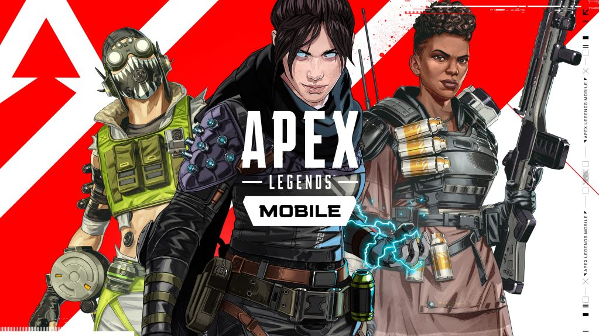

Dunia Games
 Apex Legends Mobile
Apex Legends Mobile

Apex Legends Mobile merupakan sebuah game bertema unik yang merupakan gabungan antara RGP dan RTS. Dengan begitu secara umum di dalamnya nanti selain ditantang dalam serangkaian level peningkatan, pemain juga dituntut untuk lihai meracik strategi agar hero yang dimainkan dapat terus berkembang dengan baik. Mulai dikembangkan pada tahun 2009 oleh developer Riot Games, kepopuleran LoL meledak begitu cepat bahkan sang publisher menyatakan saat ini terdapat 70 juta pemain aktif LoL di seluruh dunia dengan 12 juta pemain aktif yang menghabiskan waktu bermain setiap harinya.
Secara umum yang membuat game ini begitu menantang adalah pilihan hero atau karakter yang begitu beragam. Tak kurang dari 100 hero atau Champion yang siap dimainkan, bahkan angka tersebut akan terus bertambah seiring versi pembaruan gam. Selain itu sebagai game bergenre MOBA , LoL tentunya dapat dimainkan dalam berbagai mode seperti PvP, adu team 3v3 hingga mode latihan dengan AI Bot mode. Selain itu yang membuat game ini tak pernah sepi pemain adalah sang pengembang game sangat sering merilis versi pembaruan serta rutin mengadakan turnamen offline bahkan hingga tingkat dunia.
Fitur Apex Legends Mobile
-
Beberapa fitur Apex Legend Mobile diantaranya:
- 100 + Champions yang dibagi menjadi beberapa jenis yaitu Fighter, Assassin, Mage, Support, Tank, dan Marksman.
- Sistem anti cheat, dengan pengamanan sistem yang lebih baik dapat meminimalisir penggunaan cheat oleh pemain sehingga game berjalan lebih adil.
- Fitur Reconnect, dengan fitur ini pemain tidak perlu kawatir saat listrik tiba-tiba putus ketika sedang bermain. Karena game akan otomatis disimpan dan dapat dimainkan lagi ketika kita sudah kembali terhubung internet.
- Dan Lain-lain
Apex Legends Mobile: Minimum Requirements :
- CPU:3GHz Processor (supporting SSE2 instruction set or higher)
- RAM: 2GB RAM
- HDD:12GB Free Space
- OS: Windows 7, 8, or Windows 10
- Screen Resolution: up to 1920x1200
- DirectX:Version 9C or better
- Shader: Version 2.0b capable video card
Apex Legends Mobile: Recommended Requirements :
- CPU:3GHz Processor (supporting SSE2 instruction set or higher)
- RAM: 4GB RAM
- HDD:16GB Free Space
- OS:Windows 7, 8.1, or Windows 10
- Screen Resolution: up to 1920x1200
- DirectX:Version 9.0C or better
- GPU: Nvidia GeForce 8800 / AMD Radeon HD 5670 or equivalent video card with dedicated memory of 512MB or higher VRAM.
Detail Apex Legens Mobile :
- Release Date: 27th October 2009 (PC)
- System Requirements: Very Low
- Genre: MOBA
- Developer: Riot Games
- Publisher: Riot Games